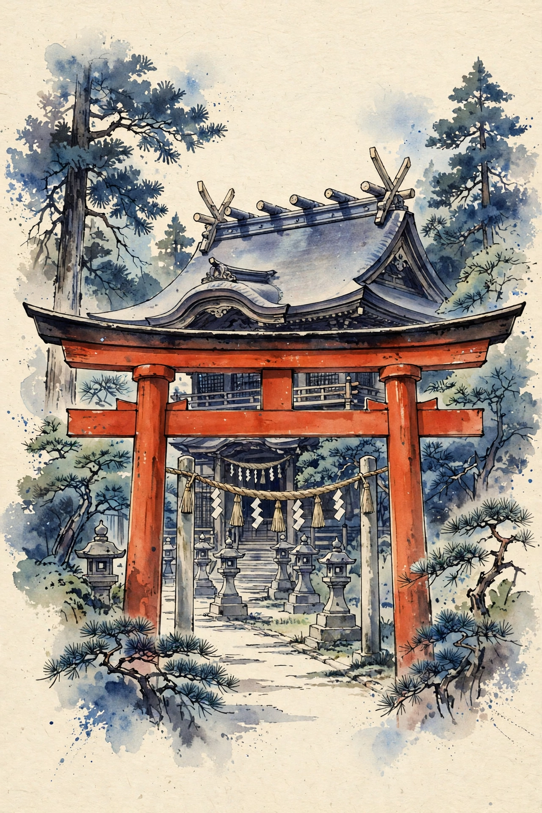
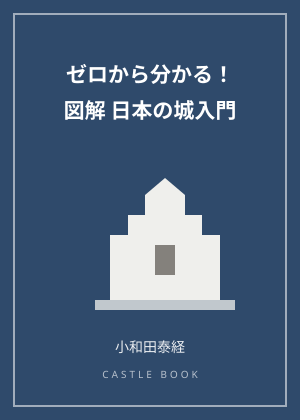
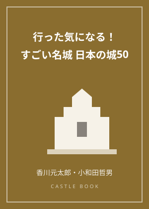

七五三と人生の節目の参拝｜お宮参りから厄年まで、人生儀礼の歩き方

晴れ着の子どもたちが千歳飴の袋を提げて歩く11月の境内。七五三は、日本の暮らしに深く根付いた参拝の行事です。今回は七五三を中心に、人生の節目に神社を訪れる「人生儀礼」の全体像を整理します。
七五三の由来と三つの祝い
七五三は、子どもの成長の節目を祝い、神に感謝と報告をする行事です。3歳の「髪置き」（髪を伸ばし始める）、5歳男児の「袴着」（初めて袴を着ける）、7歳女児の「帯解き」（帯を結ぶようになる）という、昔の成長の儀礼が組み合わさって形作られたとされています。祝いの時期は、一般に11月15日ごろとされます。
千歳飴と晴れ着の意味
七五三のお供えとして知られる千歳飴は、細く長い形に「長寿」の願いを込めた飴で、鶴亀などのめでたい絵柄の袋に入れて授かります。晴れ着で正装して参拝する姿そのものが、子どもの成長を神と家族に示す行事の中心にあります。
人生のはじまりの参拝――お宮参り
七五三より前の人生儀礼が、生まれて初めて氏神へ参る「お宮参り（初宮参り）」です。生後ひと月前後を目安に、子どもの誕生を報告し、健やかな成長を祈ります。13歳ごろの「十三参り」を節目にする地域もあります。厄払いも、年齢の節目にあわせて行われる代表的な参拝で、厄年には諸説ありますが、数え年の節目として広く案内されています。
大人になってからの節目
成人を祝う参拝、神前結婚式も、神社で行われる人生儀礼です。神前結婚式は、祭神の前に結婚を誓う儀式で、巫女の舞や三三九度など、日本の伝統的な婚礼の要素で構成されます。年齢を重ねた後の長寿の祝い（還暦・古希など）にあわせて参拝する人もいます。
検定の学習ポイント
神社検定の教科書第4章「祭りと神事」に関連する、暮らしの中の神社の姿です。「七五三は3歳・5歳・7歳の成長の祝い」「お宮参りは誕生の報告の参拝」という対比を整理し、人生儀礼は地域の氏神さまへの報告である、という視点を持っておきましょう。
七五三の参拝は、子ども本人にとっては写真の中の思い出でもあります。家族の節目に地元の神社を訪れる習慣が、神社を暮らしの身近な存在にしてきました。
この記事のおすすめ本

表紙イメージ（実際の表紙とは異なります）
PR 入門書
ゼロから分かる！ 図解日本の城入門
著者：小和田泰経
縄張・堀と石垣・天守のしくみまで、イラストでやさしく解説。城めぐり初心者が最初に持つ一冊として、検定の教科書と合わせて読むのにおすすめです。
Amazonで見る価格はAmazonでご確認ください／リンク先：Amazon.co.jp

表紙イメージ（実際の表紙とは異なります）
PR ビジュアルガイド
行った気になる！すごい名城 日本の城50
著者：香川元太郎・小和田哲男
日本各地から50の名城を、大迫力の写真と精密イラストで解説。次の城めぐりの行き先選びにも、自宅で眺めて楽しむ画報としても使えます。
Amazonで見るKindle版あり／価格はAmazonでご確認ください／リンク先：Amazon.co.jp
当サイトは、Amazon.co.jpを宣伝しリンクすることによってサイトが紹介料を獲得できる手段を提供することを目的に設定されたアフィリエイトプログラムである、Amazonアソシエイト・プログラムの参加者です。価格・在庫はリンク先でご確認ください。